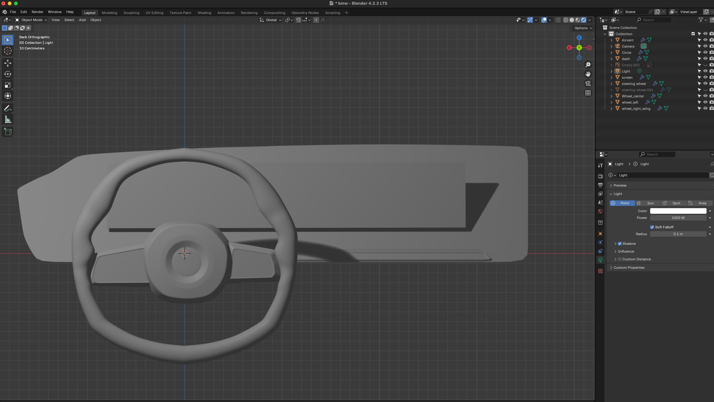
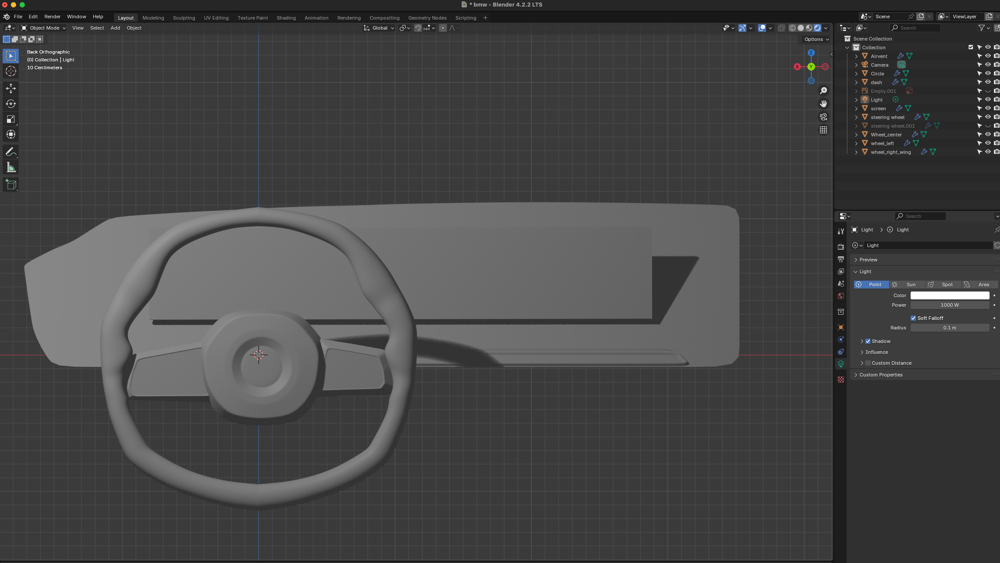
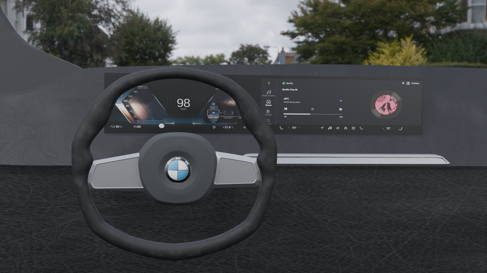
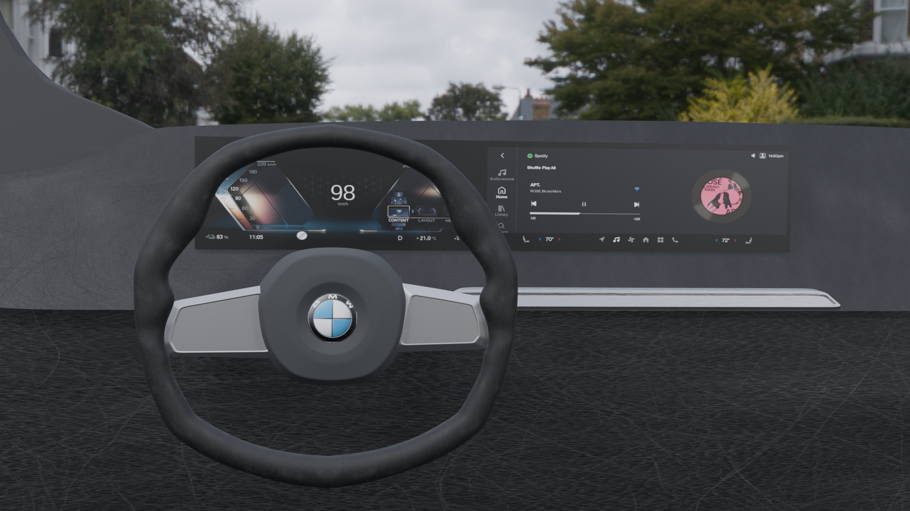

BMW Dashboard Prototype
Final render
Progress
I started by creating a steering wheel with a reference picture. I mapped it out and added additional vertices and edges to create more detailed surfaces. I used a mirror modifier so that any modification I made only needed to happen once. Then I extruded the surface to make it an object, followed by a subdivision surface modifier to make it smooth on the surface. Something strange was happening, my object was not smoothed out as expected, but one side was smooth and the other side kind of flat. The corners were not rounded either. I thought it was because I didn't select the correct vertices and surfaces when adding the modifier, but that was not the case. This part actually took me a very long time to figure out, I still don't really know why, but if I extrude using mouse drag and click, the object surfaces are nicely rounded as expected. However, if I used the keyboard to type in a number for extrusion, it would mess it up. Extrusion with subdivision surface was confusing. When I extruded the center of the steering wheel there was always an auto-created surface and lines left behind.
After fixing the problem and applying the subdivision surface, the steering wheel has its shape. I continued to work on the rest of the steering wheel in a similar way. In the process, I learned to loop cut a few times whenever a sharp transition angle is needed.
The steering wheel is pretty much done except for the logo part. I moved on to create a panel for the screen dashboard and added a compartment behind it to complete the setup. I also spent some time creating the shape of the air ventilation area.

I spent a lot of time trying to figure out how to put the logo in the center of the steering wheel. I tried so many ways and none of them worked. After extensive searching online, I found that it has to be applied to a sphere instead of a flat face in the center of the steering wheel. Thus I created a sphere and transformed it to fit the logo, then mapped it precisely in the UV editor. I then found some other textures to apply to the rest of the parts in the setting to make it feel more like in the driver's seat. In the end, I created and adjusted the lighting in the scene to and rendered my final output.
 

 

Resources:
Step-by-Step Blender 3.3 Tutorial for Modeling a Car Dashboard Part 2
Blender Timelapse | Lambo Steering Wheel (Arijan)
Blender World Background Tutorial: Environmental Textures (Rotate, scale, color correct)